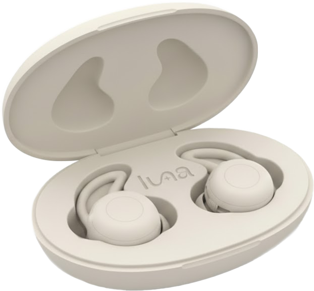
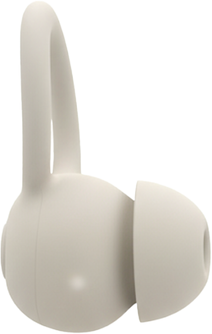
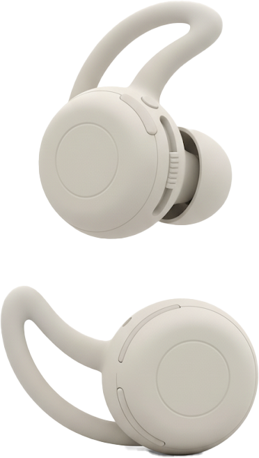
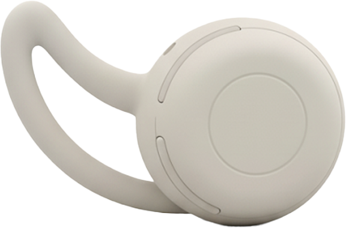
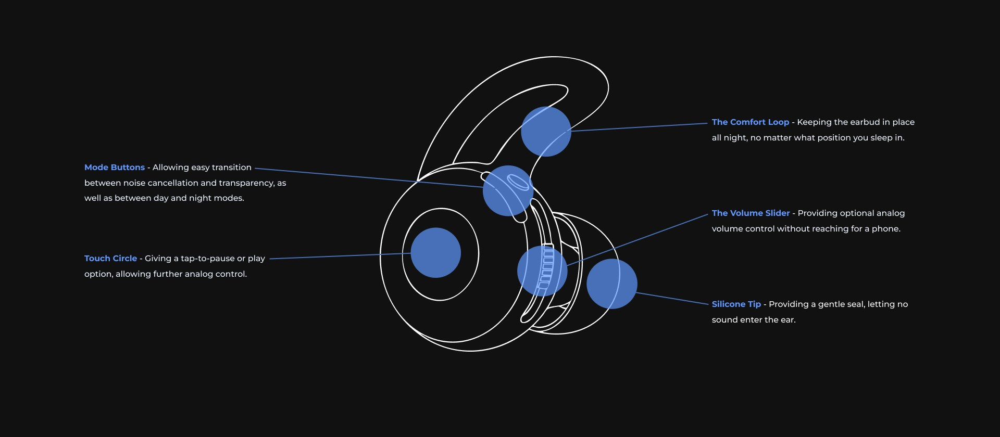
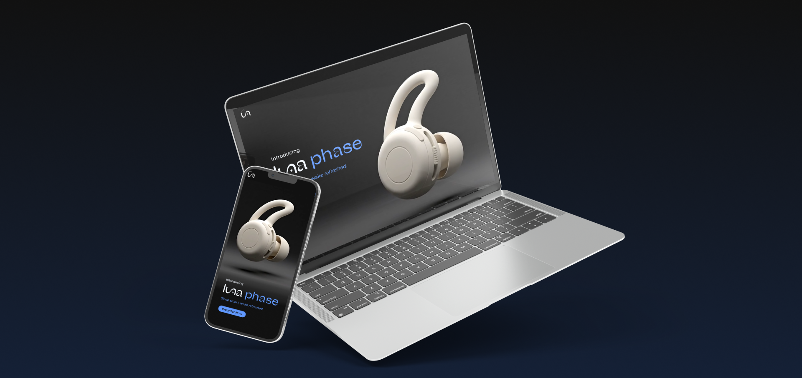
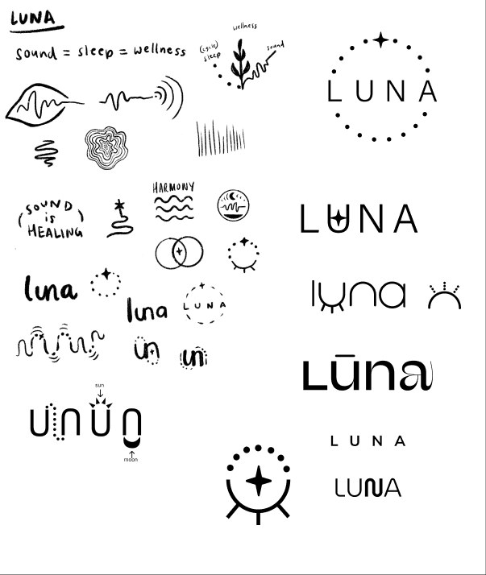
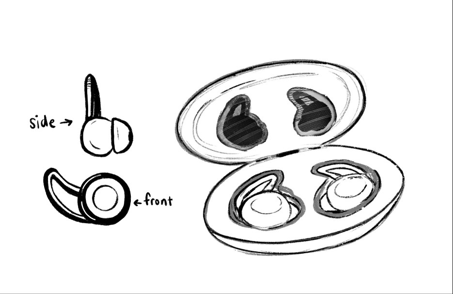
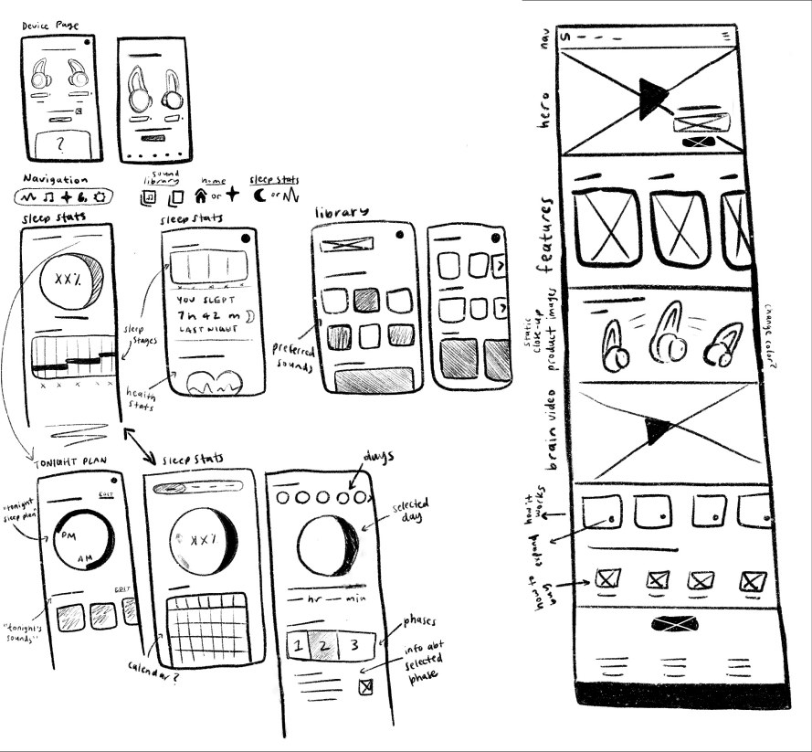

Luna Phase Headphones Launch
The launch ecosystem of the Luna Phase earbuds creates a sleep-centered wellness experience through the combination of thoughtful app, website, product, and branding design.

Our minds stay active even after the day ends, making consistent quality sleep a struggle.

Luna was designed to make good sleep effortless. By combining ergonomic earbuds and a calming app experience, Luna helps users transition from the chaos of the day into restorative rest each night.
Company Backstory
Luna’s mission is to bring the best quality sleep possible to their customers, because when you sleep well, everything else falls into place.
Value Proposition
These earbuds are not your ordinary listening device. They sense your rhythms as you sleep and adjust their sound in order to send you into quality sleep, and wake you feeling refreshed.
The Difference
With Luna, sleep is an active part of the wellness practice. It turns each night into chance to restore your mind and body through sound catered to you.









